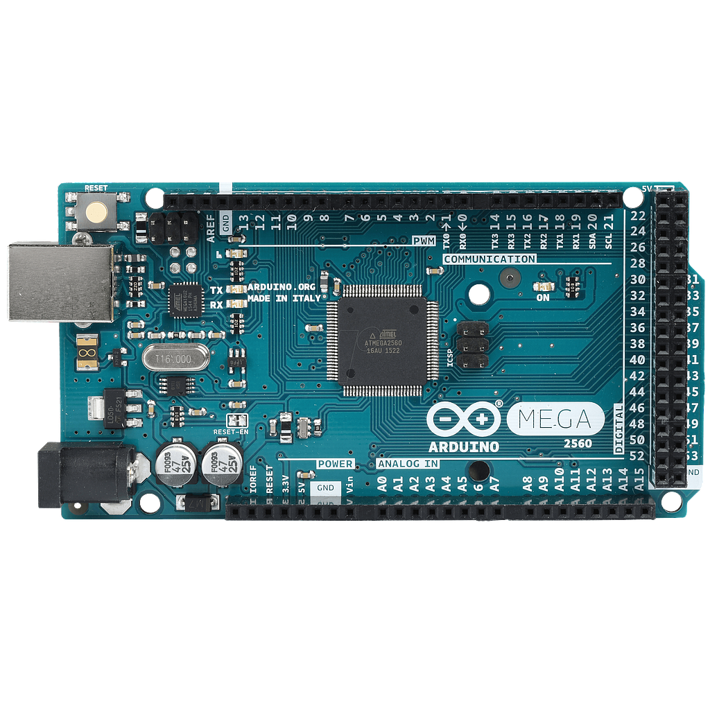

Arduino est un circuit imprimé en matériel libre (dont les plans de la carte elle même sont publiés en licence libre
mais dont certains composants sur la carte, comme le microcontrôleur par exemple, ne sont pas en licence libre)
sur lequel se trouve un microcontrôleur qui peut être programmé pour analyser et produire des signaux électriques,
de manière à effectuer des tâches très diverses comme la domotique (le contrôle des appareils domestiques – éclairage, chauffage…,
le pilotage d’un robot, etc.
